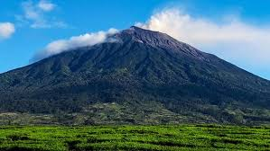
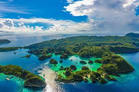
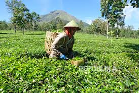

Berikut beberapa fakta menarik tentang Indonesia yang lebih menarik:
Geografi dan Demografi
1. Indonesia adalah negara kepulauan terbesar di dunia, dengan lebih dari 17.000 pulau.
2. Indonesia memiliki populasi lebih dari 273 juta orang, menjadikannya negara keempat terpadat di dunia.
3. Indonesia memiliki lebih dari 300 etnis dan lebih dari 700 bahasa.
Sejarah dan Budaya
1. Indonesia memiliki sejarah yang kaya, dengan beberapa kerajaan kuno seperti Majapahit dan Sriwijaya.
2. Indonesia memiliki budaya yang beragam, dengan pengaruh dari Hindu, Buddha, Islam, dan Kristen.
3. Indonesia memiliki banyak tradisi dan upacara adat, seperti upacara Ngaben di Bali dan upacara Sekaten di Yogyakarta.
Alam dan Ekosistem
1. Indonesia memiliki hutan hujan tropis yang luas, dengan beberapa taman nasional seperti Taman Nasional Komodo dan Taman Nasional Ujung Kulon.
2. Indonesia memiliki banyak gunung berapi, dengan beberapa gunung berapi aktif seperti Gunung Merapi dan Gunung Agung.
3. Indonesia memiliki banyak pantai yang indah, dengan beberapa pantai terkenal seperti Pantai Kuta di Bali dan Pantai Parangtritis di Yogyakarta.
Ekonomi dan Teknologi
1. Indonesia memiliki ekonomi yang berkembang pesat, dengan beberapa industri utama seperti industri pertanian, industri manufaktur, dan industri jasa.
2. Indonesia memiliki beberapa perusahaan teknologi yang terkenal, seperti GoTo dan Tokopedia.
3. Indonesia memiliki beberapa proyek infrastruktur yang besar, seperti proyek kereta cepat Jakarta-Bandung dan proyek jalan tol Trans-Jawa.



Fakta Unik Indonesia
1. Negara Kepulauan Terbesar di Dunia:
Indonesia memiliki lebih dari 17.000 pulau yang membentang dari Sabang hingga Merauke. Pulau-pulau ini memiliki keanekaragaman hayati yang luar biasa, termasuk hutan hujan tropis, pantai pasir putih, dan terumbu karang yang indah.
2. Rumah Bagi 10% Spesies Hewan di Dunia:
Indonesia memiliki keanekaragaman hayati yang luar biasa, termasuk orangutan, badak, dan harimau. Negara ini juga memiliki banyak spesies burung, reptil, dan amfibi yang unik dan langka.
3. Tempat Kelahiran Budaya Hindu dan Buddha:
Indonesia memiliki sejarah yang kaya dengan pengaruh budaya Hindu dan Buddha. Candi Borobudur dan Prambanan adalah contoh-contoh arsitektur Buddha dan Hindu yang indah dan megah.
4. Produsen Kopi Terbesar Kedua di Dunia:
Indonesia adalah negara produsen kopi terbesar kedua di dunia, setelah Brasil. Kopi Indonesia dikenal karena rasanya yang kaya dan aromanya yang kuat.
5. Rumah Bagi 130 Juta Orang:
Indonesia memiliki populasi yang besar dan beragam, dengan lebih dari 300 etnis dan 700 bahasa. Negara ini memiliki keanekaragaman budaya yang luar biasa, dengan banyak tradisi dan upacara adat yang unik.
Fakta Alam Indonesia
1. Gunung Berapi Teraktif di Dunia:
Indonesia memiliki lebih dari 130 gunung berapi, dengan beberapa di antaranya masih aktif. Gunung Merapi dan Gunung Agung adalah contoh-contoh gunung berapi yang masih aktif dan memiliki potensi untuk meletus.
2. Hutan Hujan Tropis Terbesar di Asia:
Indonesia memiliki hutan hujan tropis yang luas, termasuk Taman Nasional Sebangau dan Taman Nasional Tanjung Puting. Hutan-hutan ini memiliki keanekaragaman hayati yang luar biasa dan merupakan rumah bagi banyak spesies hewan yang unik dan langka.
3. Pantai Terindah di Dunia:
Indonesia memiliki banyak pantai yang indah, seperti Pantai Kuta di Bali dan Pantai Parangtritis di Yogyakarta. Pantai-pantai ini memiliki pasir putih yang halus dan air laut yang jernih, membuatnya menjadi tujuan wisata yang populer.
Fakta Teknologi Indonesia
1. Negara dengan Pengguna Internet Terbesar di Asia Tenggara:
Indonesia memiliki lebih dari 150 juta pengguna internet, membuatnya menjadi negara dengan pengguna internet terbesar di Asia Tenggara. Pengguna internet di Indonesia menggunakan internet untuk berbagai keperluan, termasuk berkomunikasi, berbelanja, dan mencari informasi.
2. Start-up Terbesar di Asia Tenggara:
Indonesia memiliki beberapa start-up yang sukses, seperti GoTo dan Tokopedia. Start-up-start-up ini telah menjadi contoh-contoh keberhasilan dalam bidang teknologi dan telah membantu meningkatkan ekonomi Indonesia.
Fakta Ekonomi Indonesia
1. Negara dengan Ekonomi Terbesar di Asia Tenggara:
Indonesia memiliki ekonomi yang besar dan beragam, dengan beberapa industri utama seperti industri pertanian, industri manufaktur, dan industri jasa. Ekonomi Indonesia telah tumbuh pesat dalam beberapa tahun terakhir dan telah menjadi salah satu ekonomi terbesar di Asia Tenggara.
2. Negara dengan Sumber Daya Alam yang Melimpah:
2. Indonesia memiliki sumber daya alam yang melimpah, termasuk minyak bumi, gas alam, batu bara, dan mineral lainnya. Sumber daya alam ini telah menjadi salah satu sumber pendapatan utama bagi Indonesia dan telah membantu meningkatkan ekonomi negara ini.
Sejarah Indonesia
Sejarah Indonesia adalah catatan tentang peristiwa-peristiwa yang terjadi di wilayah Indonesia dari zaman prasejarah hingga saat ini. Berikut adalah garis besar sejarah Indonesia:
Zaman Prasejarah (sebelum 3000 SM)
- Manusia purba hidup di wilayah Indonesia, seperti Homo erectus dan Homo sapiens.
- Masyarakat prasejarah di Indonesia memiliki budaya dan teknologi yang sederhana.
Zaman Hindu-Buddha (3000 SM - 1500 M)
- Agama Hindu dan Buddha masuk ke Indonesia melalui perdagangan dan penyebaran agama.
- Kerajaan-kerajaan Hindu-Buddha seperti Tarumanegara, Sriwijaya, dan Majapahit berkembang di Indonesia.
- Masyarakat Hindu-Buddha di Indonesia memiliki budaya dan arsitektur yang kaya.
Zaman Islam (1500 M - 1600 M)
- Agama Islam masuk ke Indonesia melalui perdagangan dan penyebaran agama.
- Kerajaan-kerajaan Islam seperti Demak, Pajang, dan Mataram berkembang di Indonesia.
- Masyarakat Islam di Indonesia memiliki budaya dan arsitektur yang khas.
Zaman Kolonial (1600 M - 1945 M)
- Belanda menjajah Indonesia dan mendirikan VOC (Vereenigde Oost-Indische Compagnie).
- Pemerintahan kolonial Belanda memperkenalkan sistem pemerintahan, ekonomi, dan pendidikan Barat.
- Perlawanan terhadap kolonial Belanda seperti Perang Diponegoro dan Perang Aceh terjadi.
Zaman Kemerdekaan (1945 M - sekarang)
- Indonesia merdeka pada 17 Agustus 1945.
- Pemerintahan Republik Indonesia dipimpin oleh Soekarno dan Hatta.
- Perang kemerdekaan melawan Belanda terjadi.
- Indonesia menjadi negara demokrasi dan memperkenalkan sistem pemerintahan yang baru.
- Krisis ekonomi dan politik terjadi pada 1990-an.
- Reformasi politik dan ekonomi terjadi pada 1998.
- Indonesia menjadi negara demokrasi yang stabil dan berkembang.
Penjajahan Indonesia
Penjajahan di Indonesia adalah periode ketika bangsa lain menjajah dan menguasai wilayah Indonesia. Berikut adalah beberapa periode penjajahan di Indonesia: